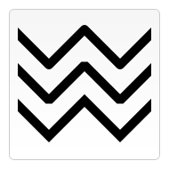

The
CanvasRenderingContext2D.lineJoin
property of the Canvas 2D API determines the shape used to join two line segments where
they meet.
This property has no effect wherever two connected segments have the same direction, because no joining area will be added in this case. Degenerate segments with a length of zero (i.e., with all endpoints and control points at the exact same position) are also ignored.
Note: Lines can be drawn with the {{domxref("CanvasRenderingContext2D.stroke()", "stroke()")}}, {{domxref("CanvasRenderingContext2D.strokeRect()", "strokeRect()")}}, and {{domxref("CanvasRenderingContext2D.strokeText()", "strokeText()")}} methods.
ctx.lineJoin = "bevel" || "round" || "miter";
There are three possible values for this property: "round",
"bevel", and "miter". The default is "miter".

"round""bevel""miter"This example applies rounded line joins to a path.
<canvas id="canvas"></canvas>
const canvas = document.getElementById('canvas');
const ctx = canvas.getContext('2d');
ctx.lineWidth = 20;
ctx.lineJoin = 'round';
ctx.beginPath();
ctx.moveTo(20, 20);
ctx.lineTo(190, 100);
ctx.lineTo(280, 20);
ctx.lineTo(280, 150);
ctx.stroke();
{{ EmbedLiveSample('Changing_the_joins_in_a_path', 700, 180) }}
The example below draws three different paths, demonstrating each of the three
lineJoin options.
<canvas id="canvas" width="150" height="150"></canvas>
var ctx = document.getElementById('canvas').getContext('2d');
var lineJoin = ['round', 'bevel', 'miter'];
ctx.lineWidth = 10;
for (let i = 0; i < lineJoin.length; i++) {
ctx.lineJoin = lineJoin[i];
ctx.beginPath();
ctx.moveTo(-5, 5 + i * 40);
ctx.lineTo(35, 45 + i * 40);
ctx.lineTo(75, 5 + i * 40);
ctx.lineTo(115, 45 + i * 40);
ctx.lineTo(155, 5 + i * 40);
ctx.stroke();
}
{{EmbedLiveSample("Comparison_of_line_joins", "180", "180", "canvas_linejoin.png")}}
{{Compat}}
ctx.setLineJoin() is implemented in addition to this property.